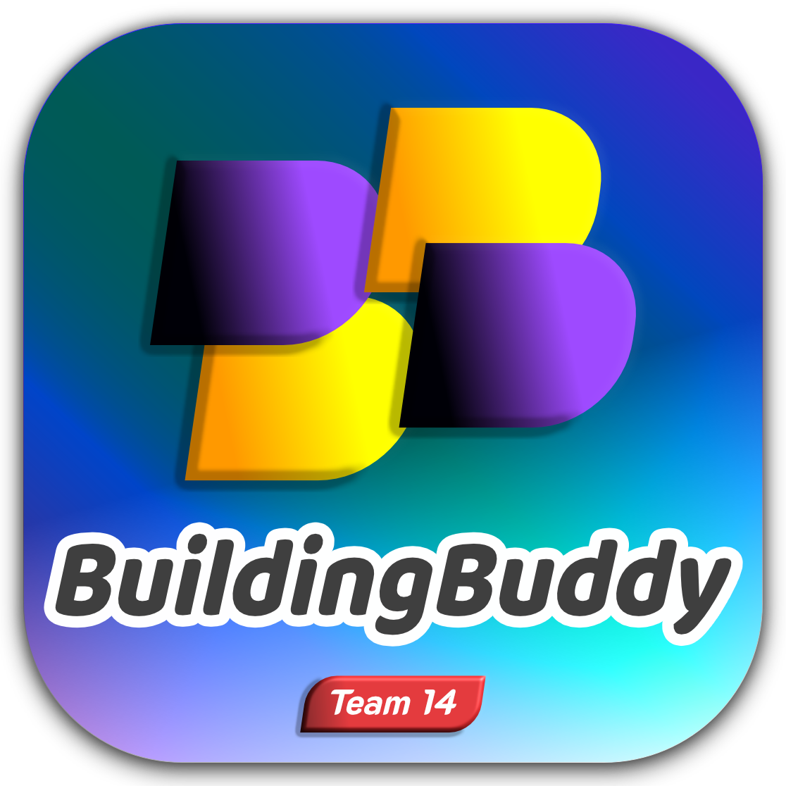

BuildingBuddy is a desktop indoor navigation app designed to help students at Western University navigate through different floors in three buildings: Middlesex College, Kresge Building, and Physics & Astronomy Building. The entire development process started on January 25, 2023, and ended on April 6, 2023. Major coding work started on March 7, 2023. BuildingBuddy is developed by Team 14 enrolled in CompSci 2212B at Western University.
BuildingBuddy is a Maven project written in Java. The integrated development environment in use is IntelliJ IDEA, with OpenJDK 19 (Java version 19.0.2).
For better user experience, set the display resolution to 1496 * 967 or higher.
If you run from IntelliJ IDEA, the easiest way to configure this app is to create a New Project from Version Control. Choose Git as your version control, and add URL: https://github.com/dan1el5/BuildingBuddy.git.
Alternatively, you may create a new project using all the source files and build the app yourself. Be sure to select Java 19 SDK of 'BuildingBuddy' Module and ca.uwo.csteam14.Main as the Main class.
If you try to run the BuildingBuddy.jar file, make sure it is located at the same directory as the data, maps, and images folders (see screenshot below).
If you come across issues with dependencies, read the next section. To minimize issues you may encounter running the program, you are encouraged to read the ensuing content (including the Caveats and FAQ sections).
Thanks to Maven, the program should load dependencies automatically in IntelliJ IDEA for macOS. In case it doesn't on your operating system, add dependencies on your own. All dependencies are stored locally in the ./lib directory. Choose File – Project Structure – Modules – Dependencies, click the + icon, choose JARs or Directories, and add the entire ./lib directory as dependencies.
If you cannot locate them, you may also download the entire lib directory here or from GitHub as a zip file. Unzip this downloaded file and add the entire folder as dependencies to the aforesaid location. Refer to the screenshot below. If you have not installed an SDK / JDK, you should add one equivalent to openjdk-19 or amazon-corretto-19.
Enter this mode by clicking the Explore button from the splash screen (opening screen). This interface allows the user to both view existing POIs and create new POIs, which are called My Locations in this app.
Enter this mode by clicking View – Bookmarks or press Ctrl + B. This interface is designed to manage the user's favourite POIs (both built-in and user-created). Please note that the user cannot create new POIs in this mode.
Enter this mode by clicking View – My Locations or press Ctrl + L. This interface is designed to manage user-created POIs. Please note that the user cannot create new POIs in this mode.
Enter this mode by clicking Discover (Windows user: Alt + D, Mac user: control + option + D) using the search bar located at the bottom left on all screens except the splash screen. The user can browse all the POIs across all the buildings or search for a specific POI. To view all POIs across the buildings, simply hit Go. The search bar will also take you to any floor when the search phrase is a building + floor code shortcut (e.g. MC2F). Learn more in the FAQ section below.
In Bookmark Manager, My Locations Manager, Search Mode, and Discovery Mode, if the user clicks on any POI on the list, that highlighted POI will be the only POI shown on the screen. Despite that, the user can still click on other POIs on this map, even if their icons do not show up until you click. To unhighlight a POI, you may close the POI reader/editor by clicking Cancel or [x], or simply clicking on the highlighted POI again. To view all the POIs on a floor map at once, click Discover in the menu or use the search bar with the building + floor code shortcut (see the FAQ section below).
To activate Development Mode in BuildingBuddy, choose More – Developer Tool in the app, or press Ctrl + X.
Development Mode is accessible only with a security key. The initial security key is CS2212BB (case-sensitive). Since developers are allowed to change the security key, you are encouraged to check the newest security key stored in plain text in ./data/security_key.
This security key is designed to only prevent regular users from modifying the database accidentally.
To quit Development Mode, either click [X] or Exit to quit the entire program, or click Logout to restart the program as a regular user.
Ctrl + U).A POI is a point of interest, namely a location on the map.
A bookmark is one of your favourite POIs that you hope to view conveniently at any time.
My Location is a POI defined by the user, not a built-in POI.
Click on any icon that represents a POI on the map and choose Add Bookmark or Remove Bookmark before pressing Save Changes.
Currently, BuildingBuddy allows the user to create an unlimited number of POIs.
Click Start in the menu on top and use the building selector underneath the app logo.
A straightforward way to view a specific floor will be using the **Discover** button in the app menu (Windows user: Alt + D, Mac user: control + option + D). There you will be able to choose any floor you wish to visit.
Alternatively, when you are not on the splash screen (the opening screen), you will see a search bar at the bottom left. Use the building code + floor code shortcut to explore any floor.
A building code is a building abbreviation:
A floor code is a single-digit number + F:
For example, if you want to visit the second floor at Middlesex College, just enter MC2F and click Go (or hit Enter).
The search bar remembers your last successful search phrase, so you can simply click Go to stay on that floor.
As a user, you can only create a POI when you're in Exploration Mode (where you see a layer filter on the left). Click on any empty spot on the map. Edit the name and description for this location. Click Save Changes when you're done.
When the user is in Bookmark Manager, My Locations Manager, Search mode or Discovery mode, they cannot add new POIs. Those interfaces are designed to manage existing POIs.
You can add a POI by clicking Start in the menu and Explore the building where you hope to add a POI.
Room numbers are currently not available for My Locations, but you can write room numbers and any useful information in the Description text box. What's cool, they are searchable!
The layer filter on the left panel shows only washrooms and accessible facilities by default. Click on other layers to see more categories of POIs. And yes, you can click on any layer again to toggle it off.
Enter View – Bookmarks, or press CTRL + B.
Enter View – My Locations, or press CTRL + L.
A user can have as many bookmarks as they want.
Sure! You can bookmark anything on any floor map.
Sure! You can do that! Just bear in mind that if you delete one of My Locations that has been bookmarked, you lose that bookmark too.
These three features will delete all your bookmarks, My Locations, and both. Your personalized data will be permanently erased, and the program will be restored to its default settings.
If you only choose to nuke all My Locations, they will also disappear from your Bookmarks if you have bookmarked them.
After you confirm your choice, the program will reboot automatically.
Use the search bar and click Go right away. You can either keep the placeholder phrase in the text bar or clear it before hitting Go.
Sorry about that! Our developers are updating this app regularly, so some POIs may have been deleted. When they no longer exist, they disappear from your Bookmarks too.
Click Exit from the main menu, or just hit [X] on top of the window.
Yes, you can. Here's a few tips for developers:
Ctrl + X) and enter the correct security key to activate Development Mode../data/security_key or shoot us an email at jason@shew.cc.If you need further help or have spotted incorrect information, feel free to write us: jason@shew.cc.
(in alphabetic order)